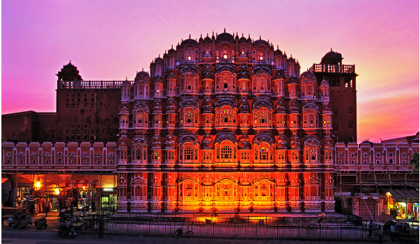
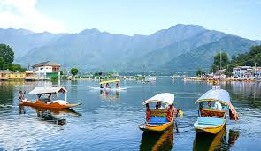
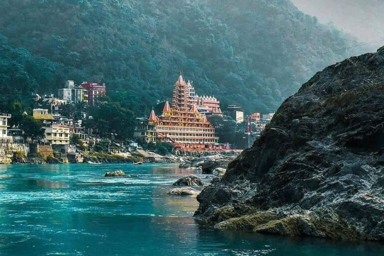

India Tour With Ravi
Plan your visit with us having +2000 visitor experience.
Get a Call Back{{img.alt}}

Top Destinations in India

Swaminarayan Akshardham in New Delhi epitomizes 10,000 years of Indian culture in all its breathtaking grandeur, beauty, wisdom an d bliss.

The Hawa Mahal is a palace in the city of Jaipur, Rajasthan, India. Built from red and pink sandstone, it is on the edge of the City Palace, Jaipur, and extends to the Zenana, or women's chambers.

Goa is a state on the southwestern coast of India within the Konkan region, geographically separated from the Deccan highlands by the Western Ghats.

Dal is a lake in Srinagar (Dal Lake is a misnomer as Dal in Kashmiri means lake), the summer capital of Jammu and Kashmir. The urban lake, is integral to tourism and recreation in Kashmir and is named the “Jewel in the crown of Kashmir” or “Srinagar’s Jewel”.

Rishikesh is also known for its connection with The Beatles. In February 1968, members of the legendary English rock band visited Maharishi Mahesh Yogi's ashram (now popularly known as the Beatles Ashram) to learn transcendental meditatio.

Situated near the end of valley, Manali is one of the most attractive tourist spot not only of Himachal Pradesh, but of International fame also. Manali is synonymous streams and birdsong, forests and orchards and grandees of snow-capped mountains.
Save Time
No need to surf Multiple Sites for Manali packages, quotes, travel plans
MULTIPLE OPTIONS
Get Multiple Itineraries & Personalised Suggestions from our Travel agents
SAVE MONEY
Compare, Negotiate & Choose the best manali package from multiple options
TRUSTED NETWORK
Of 500+ Hotels Reliable & Authentic Travel Guides in Delhi